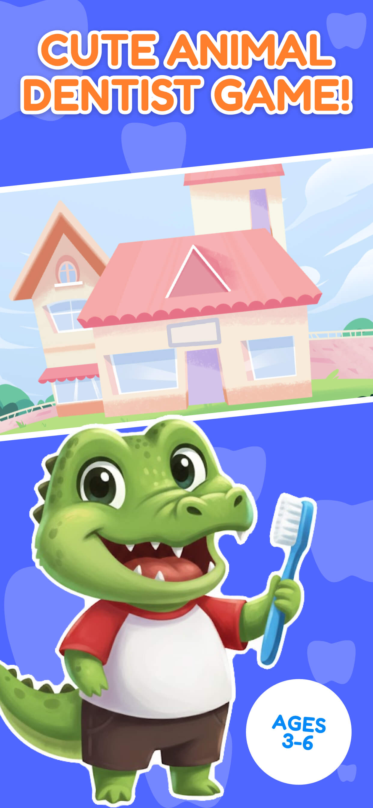

儿童牙医游戏
通过游戏帮助小朋友学习健康习惯！
儿童牙医游戏是一款专为3-8岁儿童设计的教育角色扮演体验。通过模拟真实的牙科诊所，儿童可以帮助可爱的动物朋友解决牙齿问题，同时克服对牙医的恐惧。
主要功能
- 教育角色扮演：儿童在有趣、无压力的环境中学习口腔卫生和牙科工具的相关知识。
- 三个动物患者：治疗鳄鱼、兔子和河马，每个都有独特的牙齿问题。
- 交互式工具：通过直观的拖拽控制使用X光机、牙钻、牙刷等多种工具。
- 精美动画：流畅的高质量缩放效果使诊所栩栩如生，引人入胜。
安全与质量
- 100%无广告：保证纯净的游戏体验，零第三方广告。
- 儿童安全设计：不收集数据，所有外部链接和购买都有安全的家长控制。
- 简单导航：专为幼儿和学龄前儿童设计，可独立游玩。
游戏玩法
- 选择患者：从等候室选择一个动物朋友。
- 诊断：使用X光机查找隐藏的牙齿问题。
- 治疗：刷去细菌、清理蛀牙或装上牙套来修复他们的笑容。
- 完成：看到动物的快乐反应，因为他们的牙齿现在健康了！
截图



联系与反馈
如有任何问题、建议或需要帮助，欢迎随时与我们联系：
- 邮箱：xiaomei.eazyidphoto@gmail.com
- 隐私政策：查看我们的隐私政策